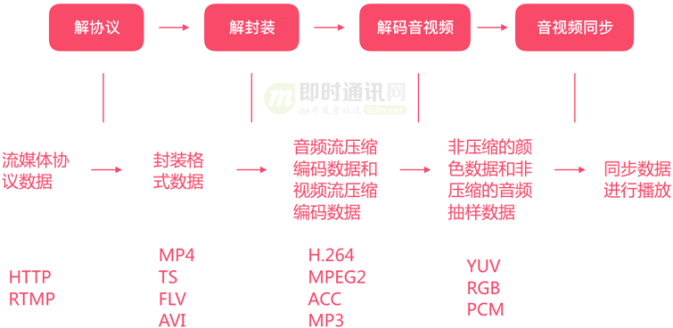
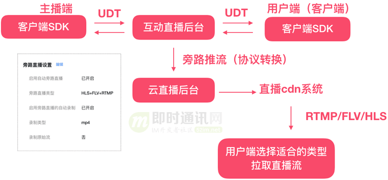
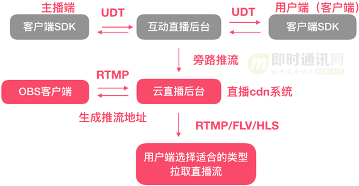
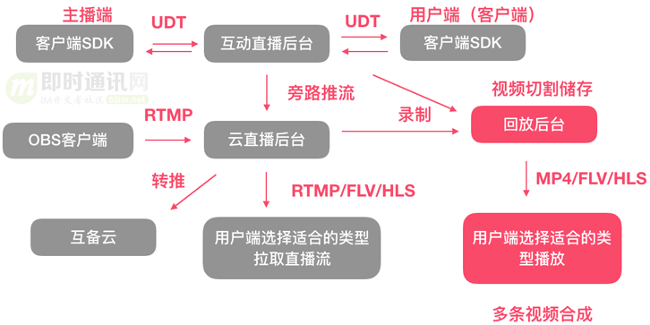

🔥前言 🔼 🔽#
- 对音视频相关概念的总结和梳理
1、相关协议 🔼 🔽#
1.1、TCP/IP 协议簇 🔼 🔽#
-
TCP/IP 协议簇的构成
graph TB subgraph L4["应用层 Application Layer"] direction LR A1["HTTP / HTTPS"] --- A2["FTP / TFTP"] --- A3["SMTP / POP3 / IMAP"] --- A4["DNS"] --- A5["Telnet / SSH"] --- A6["SNMP / DHCP"] end subgraph L3["传输层 Transport Layer"] direction LR B1["TCP"] --- B2["UDP"] end subgraph L2["网络层 Internet Layer"] direction LR C1["IP (IPv4, IPv6)"] --- C2["ICMP"] --- C3["IGMP"] --- C4["ARP / RARP"] end subgraph L1["网络接口层 Link Layer"] direction LR D1["Ethernet"] --- D2["PPP / SLIP"] --- D3["Wi-Fi"] --- D4["Frame Relay / ATM"] end %% 层次连接 L4 --> L3 L3 --> L2 L2 --> L1 -
用于网络通信的协议族，是互联网的核心协议；（本质是数据的加密和解密）
-
定义了计算机如何通过网络相互通信；
-
TCP/IP的常见应用场景：- 文件传输：通过 FTP 协议上传和下载文件；
- 网页浏览：通过 HTTP/HTTPS 协议访问网站；
- 远程登录：通过 SSH 访问远程服务器；
- 电子邮件：通过 SMTP、POP3、IMAP 收发邮件；
- 实时通信：通过 UDP 实现视频通话或在线游戏；
-
TCP/IP的优点：- 跨平台：可用于不同的硬件和操作系统；
- 扩展性强：支持不同规模的网络；
- 灵活性高：可以与多种底层网络技术结合；
- 标准化：广泛被全球互联网采用；
1.1.1、TCP/IP 的分层模型 🔼 🔽#
四个层次，从下往上
-
网络接口层（Network Interface Layer）：
- 作用：负责在物理网络上传输数据包；
- 协议：包括以太网（Ethernet）、Wi-Fi、PPP 等协议；
- 功能：定义硬件设备如何传输数据 + 通过 MAC 地址找到同一网络中的设备；
-
互联网层（Internet Layer）：
-
作用：负责实现主机间的通信，并将数据从一个网络传输到另一个网络；
-
核心协议：
-
IP（Internet Protocol）：
- 提供不可靠、无连接的数据包传递服务；
- 定义了 IP 地址，支持路由选择；
-
ICMP（Internet Control Message Protocol）：用于传递错误报告和网络状态信息（如 ping）；
-
ARP（Address Resolution Protocol）：用于将 IP 地址解析为 MAC 地址；
-
RARP（Reverse ARP）：反向解析 MAC 地址为 IP 地址（较少使用）；
-
-
功能：数据分组和路由 + 确保数据到达目标网络；
-
-
传输层（Transport Layer）：
-
作用：为应用程序提供可靠或不可靠的数据传输服务。
核心协议：
-
TCP（Transmission Control Protocol）：
- 提供面向连接的、可靠的传输服务；
- 特点：三次握手、四次挥手、超时重传、流量控制；
-
UDP（User Datagram Protocol）：提供无连接的、不可靠的传输服务；
-
特点：速度快、开销低，常用于实时应用（如视频流、在线游戏）；
-
功能：数据分段和重组 + 端口号管理（区分不同应用）；
-
-
-
应用层（Application Layer）
-
作用：直接面向用户，为各种应用提供服务；
-
核心协议：
- HTTP/HTTPS：用于网页浏览；
- FTP：文件传输协议；
- SMTP/POP3/IMAP：电子邮件协议；
- DNS：域名解析协议；
- Telnet/SSH：远程登录协议；
-
功能：数据格式化、传输和显示 + 支持不同的应用程序和服务；
-
1.1.2、TCP/IP 的核心协议特点 🔼 🔽#
| 协议 | 特点 | 描述 |
|---|---|---|
| TCP | 可靠性 | 数据传输前建立连接（三次握手），数据包丢失时自动重传，数据按序到达，避免乱序问题。 |
| 流量控制 | 使用滑动窗口机制，防止发送方发送过多数据导致接收方缓存溢出。 | |
| 拥塞控制 | 动态调整传输速度以应对网络拥塞。 | |
| 面向字节流 | 数据被看作连续字节流，不区分报文边界。 | |
| UDP | 无连接 | 不建立连接，数据直接发送。 |
| 速度快 | 没有可靠性机制，无需等待确认。 | |
| 应用场景 | 适合对实时性要求高的场景，如直播、在线游戏、VoIP。 | |
| 无连接、面向报文 |
1.1.3、TCP/IP 数据传输的完整流程 🔼 🔽#
- 数据封装：
- 应用层将数据封装为消息；
- 传输层将消息分段并添加端口号（如 TCP 段）；
- 网络层将段封装为数据包并添加 IP 地址；
- 网络接口层将数据包封装为帧，添加 MAC 地址并发送；
- 数据解封装：
- 接收端按照相反顺序逐层解析数据，最终交付给应用层；
1.2、HTTP 协议簇 🔼 🔽#
-
HTTP（Hypertext Transfer Protocol）/ HTTPS（HTTP Secure）：均基于 TCP（Transmission Control Protocol） 的传输协议；
-
HTTP/1.1：适合简单网页，但性能和扩展性有限，已逐步被淘汰；
-
HTTP/2：主流标准，解决了
HTTP/1.1的队头阻塞问题，多路复用提升了并发能力； -
HTTP/3 是 HTTP 协议的最新版本
-
它基于 QUIC（Quick UDP Internet Connections）协议，并使用 UDP 作为传输层，而不是传统的 TCP；
-
HTTP/3 的目标是解决前几代 HTTP（尤其是 HTTP/2）在高延迟和不稳定网络环境中的性能问题，同时提升传输的安全性和效率
-
HTTP/3 代表着互联网协议的未来，但由于需要广泛的网络设备支持，目前还在推广阶段；
- 主流浏览器（如 Chrome、Firefox、Edge）已支持 HTTP/3；
- Nginx、Apache 等服务器已经开始支持 HTTP/3，但需要手动配置；
-
HTTP/3 的工作流程
1、连接建立 客户端通过 UDP 发送初始数据包，同时完成 QUIC 的连接和 TLS 1.3 的握手； 服务端返回握手确认，连接建立完成后直接开始传输数据； 2、数据传输 数据被分成多个流（Stream），每个流独立传输； 丢包时，仅重新传输受影响的流，其他流继续传输； 3、连接迁移 如果设备切换网络（如从 Wi-Fi 切换到蜂窝网络），QUIC 通过连接 ID 保持会话连续性，无需重新建立连接；
-
-
HTTP/1.1vsHTTP/2vsHTTP/3特性 HTTP/1.1 HTTP/2 HTTP/3 底层传输协议 基于 TCP 基于 TCP 基于 UDP（使用 QUIC 协议） 连接机制 每个请求需要单独的 TCP 连接（连接复用有限） 单个 TCP 连接支持多路复用 单个 UDP 连接支持多路复用 多路复用 不支持 支持（多流并发传输，共用一个 TCP 连接） 支持（独立的流，避免 TCP 队头阻塞） 队头阻塞 存在（每个请求必须等待前一个完成） 存在（TCP 队头阻塞可能影响所有流） 无队头阻塞（QUIC 中每个流独立传输） 加密支持 可选（通过 HTTPS 开启加密，TLS 1.2/1.3） 默认加密（使用 HTTPS，TLS 1.2/1.3） 默认加密（内置 TLS 1.3，加密传输是强制的） 连接建立延迟 较高：TCP 三次握手 + 可选的 TLS 握手 较高：TCP 三次握手 + TLS 握手 较低：QUIC 将连接建立和 TLS 握手合并，仅需 1 个 RTT 性能表现 请求阻塞，适合简单页面 多路复用提升性能，适合复杂页面 高效传输，更适合高延迟或不稳定网络 连接迁移 不支持（IP 地址变化会中断连接） 不支持（TCP 连接与 IP 地址绑定） 支持（QUIC 的连接 ID 允许快速迁移连接） 压缩机制 不支持 支持头部压缩（HPACK） 支持改进的头部压缩（QPACK） 扩展性 较差（难以添加新特性） 较好（增加了二进制帧结构，便于扩展新功能） 更好（QUIC 的灵活性使其支持未来扩展） 典型问题 - 队头阻塞严重
- 每个请求需要单独连接，效率低- 队头阻塞仍存在
- TCP 的丢包问题影响多路复用性能- 需要支持 UDP 的网络设备
- 初期普及率较低典型场景 早期简单网站，低复杂度请求 现代网站，需处理大量并发请求 视频流媒体、实时通信、高延迟网络环境 使用场景 已较少使用，逐步被淘汰 主流标准，广泛应用于现代 Web 新兴标准，适合未来网络需求 -
HTTP/1.1、HTTP/2和HTTP/3的关键技术对比技术点 HTTP/1.1 HTTP/2 HTTP/3 请求/响应格式 纯文本 二进制格式 二进制格式 头部压缩 不支持 支持（HPACK 算法） 支持（QPACK 算法，适应 QUIC 流） 传输方式 每个请求独占一个连接 多路复用，共用一个连接 多路复用，每流独立传输 加密协议 可选（TLS 1.2/1.3） 默认加密（TLS 1.2/1.3） 强制加密（TLS 1.3 内置） 优先级控制 基本支持 强大支持（流的优先级） 改进优先级控制 丢包处理 受 TCP 队头阻塞影响 受 TCP 队头阻塞影响 每个流独立处理，不影响其他流 -
HTTP/1.1、HTTP/2和HTTP/3的适用场景场景 HTTP/1.1 HTTP/2 HTTP/3 简单网站 合适（例如低流量、简单请求的页面） 更高效 不适合小型场景，性能优势无从发挥 复杂 Web 应用 性能有限 广泛使用，性能优越 理想选择，进一步提升复杂页面加载性能 移动设备 表现一般（连接迁移差） 较好 表现最佳（支持快速连接迁移，适合网络切换）
在网络频繁切换（如 Wi-Fi 到蜂窝网络）时，保持流畅的用户体验。实时通信 表现较差（高延迟、丢包问题明显） 可用 理想选择，流畅支持实时传输和低延迟通信 流媒体服务 缓冲时间长、体验差 提升了一定的稳定性 最高效，优化流媒体传输 高延迟/弱网环境 表现较差 性能一般 性能最佳，适应弱网和高延迟环境
适合跨国通信或卫星网络等延迟较高的环境
1.3、HTML协议簇 🔼 🔽#
-
HTML（最初版本发布于 1991 年） 和 HTML5（ 2014 年成为 W3C 标准） 并不是严格意义上的继承关系，更确切地说，HTML5 是 HTML（超文本标记语言的总称） 的一个版本，是对 HTML 的升级和扩展。它们之间的关系更像是 迭代 和 升级 的关系，并非继承；
-
HTML5 是向下兼容的，这意味着以前版本的 HTML 标签在 HTML5 中大多仍然可以使用（尽管部分标签被废弃或不推荐）；
-
在继承 HTML 基本功能的基础上，HTML5 增加了许多新特性。特别是在多媒体、语义化和移动端适配方面；
-
HTML5 增删了许多语义化标签，提升了网页内容的可读性和结构化
-
HTML5 删除标签对比：
标签名 描述 替代方案 <acronym>表示首字母缩略词 使用 <abbr>代替<applet>定义 Java Applet 嵌入 使用 <object>或<embed><basefont>定义基准字体大小 使用 CSS 代替 <big>定义大号字体 使用 CSS 的 font-size代替<center>定义内容居中对齐 使用 CSS 的 text-align代替<dir>定义目录列表 使用 <ul>代替<font>定义字体相关样式 使用 CSS 的字体样式属性代替 <frame>定义框架 使用 <iframe>或 CSS 布局代替<frameset>定义框架集 使用 CSS 布局代替 <isindex>定义单行文本输入（已废弃） 使用 <form>元素代替<noframes>为不支持框架的浏览器定义内容 已不再需要 <s>定义加删除线的文本 使用 CSS 的 text-decoration代替<strike>和 <s>类似，表示删除线使用 CSS 的 text-decoration代替<tt>定义打字机样式文本 使用 CSS 的 font-family代替<u>表示下划线文本 使用 CSS 的 text-decoration代替<xmp>定义预格式化文本 使用 <pre>代替 -
HTML5 新增标签对比：
类别 标签名 描述 语义化标签 <article>表示独立的内容块，如新闻、博客文章等 <aside>表示与主要内容相关性较小的内容，如侧边栏 <details>创建交互式控件，用于显示或隐藏内容 <figcaption>定义 <figure>的标题<figure>用于分组图像或图表等独立内容 <footer>表示文档或部分内容的页脚 <header>表示文档或部分内容的页头 <main>定义文档的主要内容部分 <mark>表示需要高亮显示的重要文本 <nav>表示页面的导航部分 <section>表示文档中一个主题的分区 多媒体标签 <audio>定义音频内容 <video>定义视频内容 <source>定义媒体资源 <audio>或<video><track>为媒体提供字幕或元数据 图形相关标签 <canvas>用于绘制图像和图形的画布 表单增强 <datalist>定义输入控件的选项列表 <keygen>(废弃)定义密钥生成控件（为 Web 表单提供安全性） <output>显示计算或脚本的结果 交互控件 <progress>定义任务进度 <meter>定义范围内的度量值 其他 <time>表示时间 <wbr>定义可添加换行符的位置
-
-
多媒体支持：HTML5 原生支持音视频播放，无需额外插件（如 Flash）
-
<audio>和<video>标签，用于嵌入音频和视频内容。 -
<audio controls> <source src="example.mp3" type="audio/mpeg"> 您的浏览器不支持 audio 标签。 </audio> <video controls> <source src="example.mp4" type="video/mp4"> 您的浏览器不支持 video 标签。 </video> -
表单功能增强
<input type="email">、<input type="date">、<input type="range">、<input type="color">等；- 表单验证 ：原生支持表单验证，无需 JavaScript；
-
HTML5 提供了用于绘图和图像处理的新特性：Canvas（用于绘制 2D 图形和动画） 和 SVG（支持矢量图形的定义和操作）
-
<canvas id="myCanvas" width="200" height="100"></canvas> <script> const canvas = document.getElementById("myCanvas"); const ctx = canvas.getContext("2d"); ctx.fillStyle = "red"; ctx.fillRect(10, 10, 150, 80); </script>
-
-
HTML5 提供了新的客户端存储方式，替代传统的 Cookie：
- LocalStorage：数据保存在本地浏览器中，永久有效，直到主动清除；
- SessionStorage：数据在会话结束后清除；
-
HTML5 针对移动设备进行了优化，支持响应式设计和触摸屏：
-
支持
<meta>标签，用于移动设备的 viewport 配置<meta name="viewport" content="width=device-width, initial-scale=1.0">
-
-
HTML5 提供了多线程的 Web Worker 和更高效的 API：
- Web Worker：允许在后台运行 JavaScript 代码而不阻塞主线程；
- Geolocation API：支持定位功能，适用于移动端开发；
-
1.4、RTMP 🔼 🔽#
即， Real-Time Messaging Protocol
-
即：实时消息传输协议。是一个基于TCP的协议
-
RTMP 是一种在整个直播过程中维护播放器和服务器之间持久的TCP连接的流协议
-
在 RTMP 中，直播被分成了两个流：一个视频流和一个音频流
这些流被分解成了 4KB 的区块，这些块可以在 TCP 连接中被多路复用，即视频和音频块被交叉存取。 当视频比特率达到 500Kbps 时，和每个 HLS 段的 3 秒时长相比，每个块只有 64ms，它让穿过所有组件的流都更加顺畅。 只要编码了 64ms 的视频数据，直播者就可以发送数据；转码服务器可以处理这个区块并且生成多种输出比特率。 区块随后通过代理被转递出去，直到到达播放器。 -
RTMP是由 Adobe 开发的一种用于音视频、数据传输的应用层协议；
- 最初用于与 Adobe Flash Player 通信（历史上曾经是强绑定关系，但是其协议本身是独立于 Flash 的）；
- RTMP 是一种低延迟的流媒体传输协议，广泛应用于直播、点播、互动等实时音视频领域；
- Flash Player 的作用： 在浏览器端，Flash Player 一直是 RTMP 流的默认播放载体。用户通过网页播放器即可直接接收和播放 RTMP 流；
- 最原始的RTMP缺乏原生的加密机制。相关扩充协议（RTMPS）普及度和适配度不及 HTTPS、WebRTC 等现代协议；
-
RTMP的扩展协议：
- RTMPS（RTMP over TLS/SSL）：RTMP 的安全版本，通过 SSL/TLS 加密传输，保障数据安全性；
-
RTMPT：在 HTTP 之上封装的 RTMP，用于穿透防火墙；
-
RTMP-Chunk：将数据块分割成更小的单元，提高传输效率；
-
替代协议：
-
HLS（HTTP Live Streaming）：
- 由 Apple 推出的基于 HTTP 的流媒体协议，可以直接在 HTML5 环境下使用，且兼容性广；
- 它已成为主流，特别是在点播和直播中大幅取代了 RTMP；
-
WebRTC：实时通信协议，基于 UDP 实现超低延迟传输，支持点对点连接，特别适合互动性强的场景（如视频会议、远程教育）；
-
DASH（Dynamic Adaptive Streaming over HTTP）：另一种基于 HTTP 的流媒体协议，与 HLS 类似，用于适配不同网络环境的多码率播放；
-
协议 特点 使用场景 RTMP 低延迟、成熟稳定 直播、点播 HLS 高兼容性、延迟较高 点播、延迟不敏感的直播 WebRTC 超低延迟、基于 UDP 实时互动、视频会议 SRT 安全性高、抗丢包能力强 跨国直播、高质量传输
-
-
随着 Flash 的逐步淘汰，RTMP 的使用场景也受到一定限制：
- Flash Player 的退役： 2020 年底，Adobe 停止了对 Flash Player 的支持，各大浏览器（如 Chrome、Firefox、Edge）也完全禁用 Flash Player（可能的安全问题）；
- 失去这一主流接收端后，RTMP 在浏览器端的应用基本被取代（现代浏览器并不直接支持 RTMP 播放）；
- 带来的限制：
- 额外依赖播放器：如果需要使用 RTMP 流，客户端必须通过第三方播放器（如 VLC、FFmpeg）或专用 SDK 播放，而无法直接在浏览器中无缝集成；
- 开发成本增加：开发者需要引入额外的工具或技术栈（如将 RTMP 转码为 HLS 或 WebRTC）以兼容主流平台；
- 随着网络环境的发展，对传输协议的安全性要求提高，而原始的 RTMP 协议缺乏原生的加密机制。虽然有 RTMPS（RTMP over TLS/SSL） 来弥补，但它的普及度和适配度不及 HTTPS、WebRTC 等现代协议；
- 内容分发与 CDN 的适配问题：
- 现代内容分发网络（CDN）更倾向支持基于 HTTP 的协议（如 HLS 和 DASH），因为它们可以直接利用 HTTP 缓存机制和现有的基础设施；
- RTMP 作为专用协议，与这些现代 CDN 的优化机制不完全兼容，使用成本较高；
1.5、HLS 🔼 🔽#
即，HTTP Live Streaming
- 由 Apple 开发的流媒体传输协议，基于 HTTP/HTTPS，与现代网络基础设施（如 CDN）无缝集成；
- 使用分段视频文件（TS 或 fMP4 ）和索引文件（
.m3u8）实现视频点播和直播功能。视频以小文件传输，丢包率低，即使网络不稳定也能平稳播放； - 是事实上的行业标准，广泛支持于各种设备和平台；
- 内容保护：支持 AES-128 加密和防盗链技术；
- 核心是将视频内容切分为小段文件（通常 2~10 秒的 TS 或 fMP4 文件）并生成索引文件（
.m3u8），然后通过 HTTP 分发； - 优势：兼容性强、稳定性高，适合大规模视频分发和点播；
- 缺势：延迟较高，不适合实时场景；
- 应用场景：
- 视频点播（如 YouTube、Netflix）；
- 高并发直播（如体育赛事转播）；
- 需要多设备兼容性的直播平台；
- 延迟要求不高的场景，如新闻直播
1.6、WebRTC 🔼 🔽#
即，Web Real-Time Communication
-
开源技术，能够通过简单的 API，允许浏览器↔️移动设备，通过点对点的方式进行实时音频、视频和数据传输，无需安装插件；
-
WebRTC 是基于 RTP 的高层封装，专注于提供完整的实时通信解决方案，适合快速开发和部署点对点通信功能。
-
由 W3C 和 IETF 推动，其 API 已被大多数现代浏览器（Chrome、Safari、Firefox 等）支持；
-
使用 P2P（Peer-to-Peer）连接进行数据传输。关键步骤：
- 信令（Signaling）：用于交换通信元数据，包括 SDP（Session Description Protocol）和 ICE（Interactive Connectivity Establishment）；
- NAT 穿透：使用 STUN 和 TURN 技术解决 NAT（网络地址转换）问题，建立设备间的直接连接；
- 实时数据传输：
- 使用 SRTP（Secure Real-time Transport Protocol）传输音频和视频；
- 使用 RTCDataChannel 传输文本和二进制数据。
-
对服务器的信令和 NAT 穿透有较高要求，复杂度较高；
-
优势：低延迟（50ms - 500ms）、实时性强，适合视频会议、实时互动直播等场景；
-
劣势：对服务器的信令和 NAT 穿透有较高要求，复杂度较高；
-
应用场景：
- 视频会议（如 Zoom、Google Meet）
- 在线教育（如 ClassIn）
- 互动直播（低延迟要求）
- 远程协作（屏幕共享、文件传输等）
- 物联网设备通信（例如智能摄像头的实时视频传输）
-
HLS vs WebRTC
特性 WebRTC HLS 传输方式 点对点（P2P） 基于 HTTP 的流媒体分发 延迟 极低（50ms - 500ms） 较高（5-30 秒） 应用场景 实时通信、互动直播 视频点播、大规模直播 兼容性 浏览器原生支持，适配性高 各种设备和平台广泛支持 安全性 使用 DTLS 和 SRTP 加密传输 支持 HTTPS 和 AES-128 加密 技术架构 复杂（需要信令、NAT 穿透等） 简单（基于 HTTP） 适配 CDN 不支持（点对点传输，无法缓存） 完美支持（利用 HTTP 分发内容）
1.7、SRT 🔼 🔽#
即，Secure Reliable Transport
-
SRT 是由 Haivision 公司开发的一种基于 UDP 的流媒体传输协议，专为低延迟、可靠性和安全性而设计；
-
它常用于视频直播和远程内容分发；
-
安全拓展：SRTP（Secure Real-time Transport Protocol，安全实时传输协议）
- 用于对音视频流的实时传输提供加密、完整性保护和防重放攻击等安全功能；
- 主要目标是增强 RTP 的安全性，特别是在实时音视频通信场景下的安全需求，比如 VoIP（语音通信）、视频会议和 WebRTC；
-
SRT 的核心特点：
- 基于 UDP： SRT 以 UDP 为基础，但通过在应用层实现自己的可靠性控制，弥补了 UDP 的无连接性和数据丢包问题；
- 低延迟： SRT 提供一种叫做 ARQ（Automatic Repeat reQuest，自动重传请求）的机制，在网络丢包时进行智能重传，同时允许用户配置延迟时间窗口来平衡延迟和质量；
- 高可靠性： 使用 FEC（前向纠错）和 ARQ，SRT 能有效应对丢包、网络抖动和带宽波动等问题；
- 安全性： SRT 支持 AES-128/256 加密，确保传输过程中数据的安全性；
- 穿越防火墙： SRT 能在复杂网络环境下穿越 NAT 和防火墙，方便在公共互联网上使用；
-
SRT 的应用场景：
- 视频直播和远程制作（Broadcast and Remote Production）；
- 内容分发和转码；
- 视频监控和远程视频传输；
-
SRT 的工作原理：
- Handshake： SRT 在建立连接时使用 UDP 协议完成握手；
- 数据传输： SRT 在应用层实现数据的重传和排序，确保接收端接收完整的数据流；
- 时间窗口： SRT 引入了发送端和接收端的缓冲区时间窗口，以平衡延迟和传输质量；
- Handshake： SRT 在建立连接时使用 UDP 协议完成握手；
1.8、RTP 🔼 🔽#
即，Real-time Transport Protocol
-
RTP 是一种实时传输协议，专为实时音视频传输设计，通常与 RTP 控制协议（RTCP）一起使用，用于音视频的同步和质量监控；
-
RTP 是 IETF 定义的协议（RFC 3550），广泛用于实时通信、会议系统和 VoIP（如 WebRTC）；
-
RTP 的核心特点
-
基于 UDP： RTP 使用 UDP 提供快速、低延迟的传输，不保证数据可靠性（如无重传），适用于实时应用；
-
实时性： RTP 提供时间戳和序列号，帮助接收端按正确顺序重建音视频流并同步播放；
-
灵活性： RTP 不定义具体的编解码器，可以与
H.264、H.265、AAC等多种音视频格式配合使用； -
扩展性： RTP 支持自定义扩展头部，便于在特定应用场景中添加功能（如视频方向信息）；
-
-
RTCP（Real-Time Control Protocol）是 RTP 的控制协议，其作用：
- 主要用于监控数据传输质量并提供反馈。典型功能包括：
- 统计信息报告（如丢包率、延迟、抖动等）；
- 接收端反馈给发送端，调整传输速率或其他参数；
- 主要用于监控数据传输质量并提供反馈。典型功能包括：
-
RTP 的应用场景：
- 视频会议（如 Zoom、Teams 等）
- 实时语音通话（如 VoIP 和 SIP）
- 实时视频流（如：WebRTC）
-
RTP 的工作原理：
-
数据封装： RTP 将音视频数据封装到 RTP 数据包中，附带时间戳和序列号。
-
同步与播放： 接收端通过时间戳和序列号重建音视频流。
-
与 RTCP 配合： RTCP 提供质量监控和同步控制。
-
WebRTC vs RTP
对比维度 WebRTC RTP 是否独立工作 提供完整通信框架，适合直接使用 仅提供传输功能，需与其他协议配合使用 是否支持数据通道 支持额外的 Data Channel，用于任意数据传输 仅支持音视频流传输 NAT 穿越支持 内置支持，能穿越防火墙和 NAT 无内置支持，需借助额外协议实现 开发者友好性 高：封装较多，开发简单 较低：需要自行实现信令、安全性等 典型使用场景 如果需要快速实现点对点的实时通信功能（如视频聊天、屏幕共享），
＋ 需要在复杂网络环境中运行，
WebRTC 是首选如果你需要更灵活、底层的实时传输功能，
比如实现定制化的流媒体传输、VoIP 系统或广播应用，可以使用 RTP。
配合 SRTP 和其他协议（如 SIP 或 HLS），
RTP 可实现高度定制化的实时传输系统 -
SRT vs RTP
特性 SRT RTP 底层协议 基于 UDP 基于 UDP 可靠性 高：支持重传（ARQ）和纠错（FEC） 较低：无内建重传，依赖更高层协议 安全性 支持 AES 加密 无内置加密机制（需配合 SRTP 实现加密） 延迟 较低：可配置延迟窗口 极低：适合实时应用 复杂度 较高：额外实现可靠性和安全性 较低：更接近裸 UDP 典型应用 视频直播、远程传输 视频会议、VoIP、WebRTC 备注 需要高可靠性、强安全性以及在复杂网络环境下的稳定性
（如公网直播）追求极低延迟并能容忍一定程度的数据丢失 -
1.9、MQTT 🔼 🔽#
即，Message Queuing Telemetry Transport
-
轻量级的发布/订阅消息传输协议；
-
协议版本：目前主流版本是 MQTT 3.1.1 和 MQTT 5.0（后者提供了更多特性，如消息过期、增强的错误处理等）；
-
加密与安全：可以通过 TLS/SSL 提供传输层加密；支持认证机制（用户名/密码或基于证书）；
-
专为资源受限设备和网络设计。MQTT 的协议头非常小，非常适合低带宽、不稳定的网络环境，比如无线网络；
-
它通常用于物联网（IoT）领域，支持设备之间的高效通信；
-
架构异于传统点对点通信：
- 发布者将消息发送到主题（Topic），订阅者订阅某个主题，通过 Broker 转发接收消息；
- 持久化会话：支持客户端和 Broker 之间的会话持久化（Clean Session 标志），以便在客户端断开后重新连接时恢复订阅关系；
- 保留消息（Retained Message）：Broker 可以保留某个主题的最后一条消息，新订阅者可以立刻收到该消息；
- 遗嘱消息（Last Will and Testament, LWT）：客户端可以设置遗嘱消息，当它意外断开时，Broker 会将遗嘱消息发送到指定的主题，通知其他订阅者；
-
质量保证（QoS）：
- QoS 0：至多一次（At most once），不保证消息到达；
- QoS 1：至少一次（At least once），确保消息至少到达一次，但可能重复；
- QoS 2：仅一次（Exactly once），确保消息只到达一次，适合高可靠性场景；
-
基本架构：（使用客户端-服务器架构）
-
Broker（消息代理）
- 充当消息的中间人，负责接收客户端发布的消息，并将消息转发给订阅了相应主题的客户端；
- 例子：Eclipse Mosquitto、HiveMQ、EMQX；
-
Publisher（发布者）：负责将消息发布到某个主题的客户端；
-
Subscriber（订阅者）：订阅一个或多个主题，接收与之匹配的消息；
-
主题（Topic）：类似一个消息的分类标签，发布者将消息发布到一个主题上，订阅者根据主题接收消息；
-
-
工作流程：
- 连接：客户端向 Broker 发起连接请求（通过 TCP/IP 或 WebSocket），并进行身份验证（用户名/密码）；
- 订阅主题：客户端向 Broker 提交订阅请求，指定感兴趣的主题；
- 发布消息：客户端向 Broker 发布消息，指定目标主题；
- 转发消息：Broker 根据订阅关系将消息转发给相应的订阅者；
- 断开连接：客户端断开连接，Broker 清理相关的会话或触发遗嘱消息；
-
常见应用场景
- 物联网：智能家居（如灯光、温湿度传感器控制）、工业设备监控（如设备状态和故障报警）；
- 实时消息系统：移动聊天系统、实时位置跟踪；
- 远程监控：停车场设备、交通设施状态监控；
特性 MQTT HTTP CoAP 通信模型 发布/订阅 请求/响应 请求/响应（支持订阅） 带宽消耗 低 高 非常低 实时性 高 较低 高 适用场景 物联网、实时消息 静态资源访问 嵌入式设备、低功耗环境
1.10、WebSocket 🔼 🔽#
-
WebSocket 是一种全双工通信协议，允许客户端和服务器在单个 TCP 连接上进行实时、双向的数据交换；
-
它解决了传统 HTTP 协议在实时通信场景下的高延迟和高开销问题，广泛应用于即时通讯、实时通知、多人协作等场景；
-
HTTPvsWebSocket特性 HTTP WebSocket 通信模式 单向（请求-响应） 双向（全双工） 连接方式 每次请求新建连接 一次握手建立持久连接 适用场景 静态数据请求、资源加载 实时通信、低延迟场景 数据头大小 较大（HTTP 头部字段多） 小（WebSocket 头部更轻量） 资源消耗 较高（频繁创建和销毁连接） 较低（持久连接） -
核心特点
-
工作流程：
-
握手阶段：
- WebSocket 使用 HTTP 协议进行初始握手，客户端向服务器发送一个
Upgrade请求，要求将协议升级为 WebSocket； - 如果服务器支持 WebSocket，会返回
101 Switching Protocols状态码，表示连接升级成功；
- WebSocket 使用 HTTP 协议进行初始握手，客户端向服务器发送一个
-
数据传输：握手成功后，客户端和服务器可以通过 WebSocket 通道进行实时数据交换；
-
关闭连接：任意一方都可以通过
close操作主动断开连接；
-
-
握手请求示例
客户端请求：
GET /chat HTTP/1.1 Host: server.example.com Upgrade: websocket Connection: Upgrade Sec-WebSocket-Key: dGhlIHNhbXBsZSBub25jZQ== Sec-WebSocket-Version: 13服务器响应：
HTTP/1.1 101 Switching Protocols Upgrade: websocket Connection: Upgrade Sec-WebSocket-Accept: s3pPLMBiTxaQ9kYGzzhZRbK+xOo=
1.11、SIP 🔼 🔽#
即，Session Initiation Protocol
-
用于建立、管理和终止 VoIP 呼叫的信令协议；
-
功能：负责建立、修改和终止会话；
-
特点：
- 基于文本（类似 HTTP），易于调试；
- 支持用户注册、呼叫转移、呼叫保持等功能；
-
流程：
- INVITE：客户端发送呼叫邀请；
- ACK：确认会话建立；
- BYE：终止会话；
1.12、H.323 🔼 🔽#
1.13、VoIP 🔼 🔽#
即，Voice over Internet Protocol
-
互联网语音协议，VoIP 也被称为 IP 语音或网络电话技术；
-
将模拟信号（如声音）转换为数字信号，通过网络传输到对端，实现通话功能；
-
某些宗教信仰国家或者地区（比如Dubai）会封锁VoIP协议。具体做法就是强制性的要求在该区域内使用的软件不得包含VoIP的实现；所以不能在软件（如：Skype、Zoom、Google Meet）上打电话只能发语音条；
-
VoIP 技术颠覆了传统电话通信的模式，通过互联网实现低成本、高灵活性的实时语音和视频通信。尽管在安全性和网络依赖性方面存在挑战，但通过引入编解码器优化、加密技术以及协议改进，VoIP 技术已广泛应用于企业通信、个人通话、智能设备等领域，成为现代通信的核心技术之一。
-
核心原理：
-
工作流程：
-
编解码器（Codec）是 VoIP 的核心技术，用于将语音信号编码成数据流；
编解码器 采样率 带宽消耗 特点 G.711 8 kHz 64 kbps 无压缩，高音质，网络消耗高 G.729 8 kHz 8 kbps 压缩率高，适合低带宽网络 OPUS 8-48 kHz 动态（6-510 kbps） 高效，支持语音和音乐 AMR 8 kHz 4.75-12.2 kbps 适合移动网络，支持降级策略
2、视频直播数据流解封装原理 🔼 🔽#

- 解协议；
- 解封装；
- 解码音视频；
- 音视频同步播放；
3、FFMPEG 🔼 🔽#
-
多媒体处理工具，它是一个开源项目，支持几乎所有的音视频格式和编解码器；
-
核心组件：
- ffmpeg 命令行工具：用于音视频处理的命令行工具；
- ffprobe 命令行工具：用于分析多媒体文件的工具；
- libavcodec：负责音视频编解码的核心库；
- libavformat：处理多媒体文件格式的库（如 MP4、MKV 等）；
- libavfilter：提供音视频滤镜功能的库；
- libswscale：用于图像缩放和像素格式转换；
- libswresample：用于音频采样率转换和格式转换；
- libavdevice：支持输入输出设备的库；
-
核心功能：
- 转码 (Transcoding)：
- 重新编码音视频文件，例如将 AVI 转为 MP4；
- 支持多种编解码器，如 H.264、HEVC、AAC 等；
- 格式转换 (Container Conversion)：
- 转换文件的封装格式而不重新编码；
- 示例：从 MKV 转为 MP4，只改变封装格式，速度快；
- 剪切与合并：
- 可以精确地剪切音视频片段；
- 支持将多个音视频文件合并为一个文件；
- 滤镜处理 (Filters)：
- 添加特效或修改音视频，比如旋转、裁剪、叠加文字、调节音量等；
- 多媒体流处理：
- 录制、推流、接收实时音视频流；
- 可用于直播场景，支持 RTMP、HLS 等协议；
- 音视频信息分析：
- 使用
ffprobe查看音视频文件的详细信息，包括比特率、分辨率、编解码器等；
- 使用
- 转码 (Transcoding)：
-
常用命令
# 查看文件信息（文件的编解码器、比特率、分辨率等详细信息） ffprobe input.mp4 # 转换文件格式：将 AVI 文件转换为 MP4 文件 ffmpeg -i input.avi output.mp4 # 指定编解码器进行转码 # -c:v：指定视频编解码器为 H.264 # -c:a：指定音频编解码器为 AAC ffmpeg -i input.mp4 -c:v libx264 -c:a aac output.mp4 # 裁剪视频 # -ss：指定起始时间 # -to：指定结束时间 # -c copy：不重新编码，直接裁剪 ffmpeg -i input.mp4 -ss 00:01:00 -to 00:02:00 -c copy output.mp4 # 合并视频 ffmpeg -f concat -safe 0 -i file_list.txt -c copy output.mp4 file_list.txt 内容示例 file 'video1.mp4' file 'video2.mp4' # 添加水印 # overlay=10:10：将水印放在视频的左上角，距离边缘 10 像素 ffmpeg -i input.mp4 -i watermark.png -filter_complex "overlay=10:10" output.mp4 # 调整分辨率 # scale=1280:720：将视频分辨率调整为 1280x720 ffmpeg -i input.mp4 -vf scale=1280:720 output.mp4 # 视频转图片序列 # 每帧导出为一张图片 ffmpeg -i input.mp4 frame_%04d.png # 图片序列转视频 # -framerate 30：设置帧率为 30 ffmpeg -framerate 30 -i frame_%04d.png -c:v libx264 -pix_fmt yuv420p output.mp4 # 推送流媒体 # 推送到 RTMP 服务器。 ffmpeg -re -i input.mp4 -c copy -f flv rtmp://your.server/live/streamkey
4、推拉流 🔼 🔽#
- 推流：指将本地的音视频数据通过网络协议发送到服务器或其他客户端。常用于主播将视频内容推送到直播服务器。
- 拉流：指客户端从服务器或其他数据源获取音视频数据并进行解码播放。观众通过拉流观看主播的直播内容。
- 传统推拉流的工作原理：
- 基于CDN（内容分发网络）：
- 主播推流到CDN服务器；
- 观众从CDN拉取直播流；
- 优点：稳定性高，支持大规模分发；
- 缺点：带宽成本高，存在一定延迟；
- 基于MCU/ SFU：
- MCU（多点控制单元）：集中处理音视频流，例如混音、转码后再分发；
- SFU（选择性转发单元）：直接转发音视频流给多端，不进行转码处理；
- 缺点：MCU处理能力有限，SFU虽然降低了服务器压力，但仍依赖中心化服务器；
- 基于CDN（内容分发网络）：
4.1、P2P（Peer-to-Peer，点对点）技术 🔼 🔽#
-
分布式网络架构，其特点是网络中的每个节点（设备或计算机）既可以作为客户端，也可以作为服务器；
-
P2P技术通过去中心化的方式实现资源共享、数据传输和协作。广泛应用于文件共享、即时通讯、区块链等领域；
-
P2P音视频传输的实现通常依赖以下技术：
- WebRTC
- STUN（用于获取客户端的公网IP，协助建立点对点连接）/ TURN（当P2P直连失败时，充当中继服务器进行数据转发）；
- ICE（交互式连接建立）：综合**
STUN/TURN**技术，动态选择最佳传输路径； - DTLS + SRTP：保证数据传输的安全性和实时性；
- 分片与组播
- 分片：将大流分割成小片段，通过多个P2P节点分发，类似于BitTorrent的工作原理；
- 组播：在多观众场景中，节点可以充当中继，帮助转发音视频数据给周围观众；
- 节点角色分配
- 种子节点：主要负责初始数据流的分发（例如主播）；
- 中继节点：既拉取数据又负责将数据转发给其他节点；
- 叶子节点：只负责接收数据并播放，不再转发；
- WebRTC
-
P2P推拉流的应用场景
- 小规模实时通信：点对点视频通话、视频会议
- 大规模互动直播：互动直播间（如教育、游戏直播）、连麦场景
- 文件或视频分发：通过P2P加速点播视频的下载或播放
-
P2P推拉流的挑战：
- 网络穿透：NAT穿透对P2P连接至关重要，部分网络环境下P2P连接可能失败；
- 带宽与延迟：若某个中继节点带宽不足，会影响其他节点的观看体验；
- 可靠性与稳定性：节点的不可靠性（掉线、弱网）会导致数据丢失或传输中断；
- 安全性：P2P通信需要严格的数据加密机制，防止数据被篡改或窃取；
-
P2P与CDN结合：
- 混合模式：大多数实际应用中，会结合P2P和CDN以保证流畅性和稳定性
- 高并发场景：观众通过P2P分发，缓解CDN压力；
- 弱网环境：通过CDN作为兜底保障，避免因P2P连接失败而导致观看失败；
- 混合模式：大多数实际应用中，会结合P2P和CDN以保证流畅性和稳定性
-
P2P推拉流的优势：
- 去中心化：主播和观众之间直接连接，不依赖中心服务器；
- 低延迟：由于数据传输路径短，延迟明显降低；
- 带宽节省：使用节点间的闲置带宽，减轻中心服务器的压力；
- 扩展性强：支持大量观众之间的直接连接；
-
P2P技术的核心特点：
- 去中心化：没有固定的中心服务器，所有节点地位平等，能够独立发起和响应请求；
- 资源共享：每个节点既是资源的提供者，也是资源的使用者，可以共享存储、带宽、计算能力等；
- 自组织：网络能够根据节点的加入或退出动态调整，保持网络的连通性和效率；
- 高扩展性：网络的性能和容量随着节点的增加而提升；
- 容错性强：单个节点的故障不会影响整个网络的运行；
-
P2P技术的工作原理：
- 节点发现：节点需要找到其他节点以建立连接，常用的方法包括中心服务器引导、分布式哈希表（DHT）以及广播；
- 资源定位：通过分布式索引（如DHT）或搜索算法定位需要的资源，避免集中存储；
- 数据传输：使用分块传输技术（如BitTorrent）提高传输效率，支持多点下载和上传；
- 网络维护：P2P网络会定期检查节点的可用性，并移除离线节点以保证网络的稳定性；
-
P2P技术的优势：
- 高效利用资源：利用每个节点的计算能力和带宽，实现资源的高效共享；
- 抗中心化攻击：无中心服务器，网络更具弹性，不容易因单点故障或攻击而瘫痪；
- 成本低：不依赖大型服务器，运营成本较低；
- 扩展性强：随着节点的增加，系统的性能和能力也能动态提升；
-
P2P技术的挑战：
- 安全性问题：缺乏中心控制，容易受到恶意节点的攻击，如数据篡改、欺诈行为等；
- 带宽压力：部分节点可能成为流量热点，导致带宽负载过重；
- 资源不可控性：节点可能随时离线，导致资源分布和获取的不确定性；
- 版权问题：在文件共享领域，P2P技术容易引发侵权争议；
-
P2P技术的应用场景：
- 文件共享：经典案例：BitTorrent、eMule，用于大规模文件分发；
- 即时通讯：早期的Skype使用P2P技术实现高效通信；
- 流媒体分发：P2P直播平台通过节点间的共享分发直播内容，缓解中心服务器的压力；
- 区块链：比特币、以太坊等区块链系统是基于P2P网络构建的，支持去中心化账本；
- 分布式存储：IPFS（星际文件系统）通过P2P技术构建高效的分布式存储网络；
- 分布式计算：SETI@home、Folding@home等利用P2P技术进行大规模的科学计算；
4.2、架构 🔼 🔽#
- 厂商SDK推拉流
- 旁路推流

-
RTMP推流

- RTMP推流的优势和劣势
优势 描述 支持专业设备接入 可以接入专业的直播摄像头、麦克风，直播的整体效果明显优于手机开播。 OBS插件丰富 OBS已有许多成熟插件，如蘑菇街主播常用的YY助手，可用于美颜处理。
此外，OBS本身支持滤镜、绿幕、多路视频合成等功能，功能比手机端强大。劣势 描述 配置复杂 OBS本身配置较复杂，需要专业设备支持，对主播的要求更高，通常需要一个固定场地进行直播。 延时较长 RTMP需要云端转码，本地上传时也需在OBS中配置GOP和缓冲，导致延时相对较长。
- RTMP推流的优势和劣势
-
云互备（高可用架构方案）：业务发展到一定阶段后，我们对于业务的稳定性也会有更高的要求

5、相关文件格式 🔼 🔽#
5.1、FLV 🔼 🔽#
-
FLV 是一种轻量级、高效的流媒体容器格式，具有低延迟和实时性的优点，用于存储音频、视频以及元数据，广泛应用于早期的流媒体点播和直播系统中；虽然其主流地位已经被更现代的格式（如 MP4 和 HLS）取代，但在特定领域（如 RTMP 直播）仍然有着不可忽视的应用价值；
-
它通过简单的结构设计，确保可以快速解析和实时流传输；
特性 FLV MP4 HLS 实时性 高 一般 较低 延迟 低（RTMP 推流） 较高 高（切片时间长） 文件大小 小 较大 中等 兼容性 较低（依赖 Flash） 高 高 -
基本结构：
-
Header（文件头）
-
用于标记文件类型和版本信息；
-
通常为固定长度的 9 字节；
偏移位置 长度 字段 说明 0 3 文件标志 “FLV” FLV 文件标识符 3 1 版本号 通常为 1 4 1 文件标志位 音频/视频标识 5-8 4 Header 长度 文件头长度（9 字节）
-
-
Previous Tag Size（上一个 Tag 的大小）
- 标记上一个数据块的大小，固定为 4 字节；
- 第一个块的值为 0；
-
Tag（数据块）
-
FLV 的主体部分，由一系列 Tag 组成；
-
每个 Tag 存储一个音频帧、视频帧或元数据信息；
-
Tag 类型
- 音频 Tag（Type=8）：
- 存储音频数据；
- 支持格式：AAC、MP3、SPEEX 等；
- 视频 Tag（Type=9）：
- 存储视频帧数据；
- 支持格式：H.263、H.264、VP6 等；
- 元数据 Tag（Type=18）：
- 包含文件的元数据信息（如分辨率、码率、时长等）；
- 音频 Tag（Type=8）：
-
Tag 的结构：
字节偏移 长度 内容 说明 0 1 Tag 类型 音频/视频/元数据 1-3 3 数据大小 数据的大小 4-7 4 时间戳（毫秒） 数据包的时间戳 8-10 3 扩展时间戳 扩展时间戳（高精度） 11-… N 数据载荷（音频/视频） 实际的数据内容
-
-
5.2、TS 🔼 🔽#
5.3、MP4 🔼 🔽#
5.4、HLS 🔼 🔽#
6、FAQ 🔼 🔽#
6.1、什么是以太网？🔼 🔽#
- 局域网（LAN），像是汽车这个大类。 是一个范围概念：指在有限区域内（如家庭、办公室、校园、工厂）建立的计算机网络。LAN 可以用不同的技术来实现，比如 以太网、Wi-Fi、令牌环 等。
- 以太网（Ethernet），就像丰田卡罗拉这种具体车型。 是一种实现局域网的具体技术标准。它规定了网线、交换机、数据帧格式、MAC 地址等。换句话说，大多数 LAN 都是通过以太网来搭建的，但 LAN ≠ Ethernet。
6.2、什么叫字节流？🔼 🔽#
-
**字节流（Byte Stream）**是指一连串没有边界的字节序列。
-
它强调的是连续性，数据被看作一个接一个的字节流动，像水流一样不断传输。
-
特点
-
无固定边界 数据是连续的，没有“包”的概念。应用层要自己定义消息的分隔方式（比如加分隔符
\n，或者前面写一个长度字段）。 -
顺序保证 发送的字节序列在接收方一定按顺序到达，不会乱序。
-
传输透明 系统不会关心你写的是什么内容（文本、图片、JSON 都可以），只管把字节一个个送过去。
-
-
举例
-
TCP 就是“面向字节流”的协议。 如果你在 TCP 套接字里写入：
send("Hello") send("World")接收方可能会一次性读到
"HelloWorld"， 也可能先读到"Hel"，下一次再读到"loWorld"。 因为 TCP 不知道你逻辑上有“Hello”和“World”两个消息，它只知道有一堆连续的字节。 -
UDP 则不同，它保留消息边界，一次发送的
"Hello"和"World"，接收方一定是两个独立的报文。
-
6.3、TCP 怎么从字节流里面识别这个完整消息的？🔼 🔽#
-
定长消息（Fixed-Length） 每个消息固定长度，比如 512 字节。接收方只要每次读 512 个字节，就能知道一条完整消息。
- 优点：简单
- 缺点：浪费带宽（消息不足 512 字节也要填充）
-
分隔符（Delimiter-Based） 在消息末尾加一个特殊符号，例如 HTTP/1.0 的请求用
\r\n\r\n分隔头部和主体。- 优点：灵活直观
- 缺点：如果正文里也可能出现分隔符，就需要转义
-
长度字段（Length-Prefixed） 在消息前加上一个固定大小的“长度”字段，说明后面数据的大小。
-
例如：
[长度=11][Hello World] [长度=5][12345] -
接收方先读长度，再根据长度读完整消息。
-
很多二进制协议（如 gRPC、Protobuf over TCP）都这么做。
-
-
混合方式：有些协议同时用分隔符和长度，比如 HTTP/2、WebSocket 就结合了头部长度和帧分隔的概念。